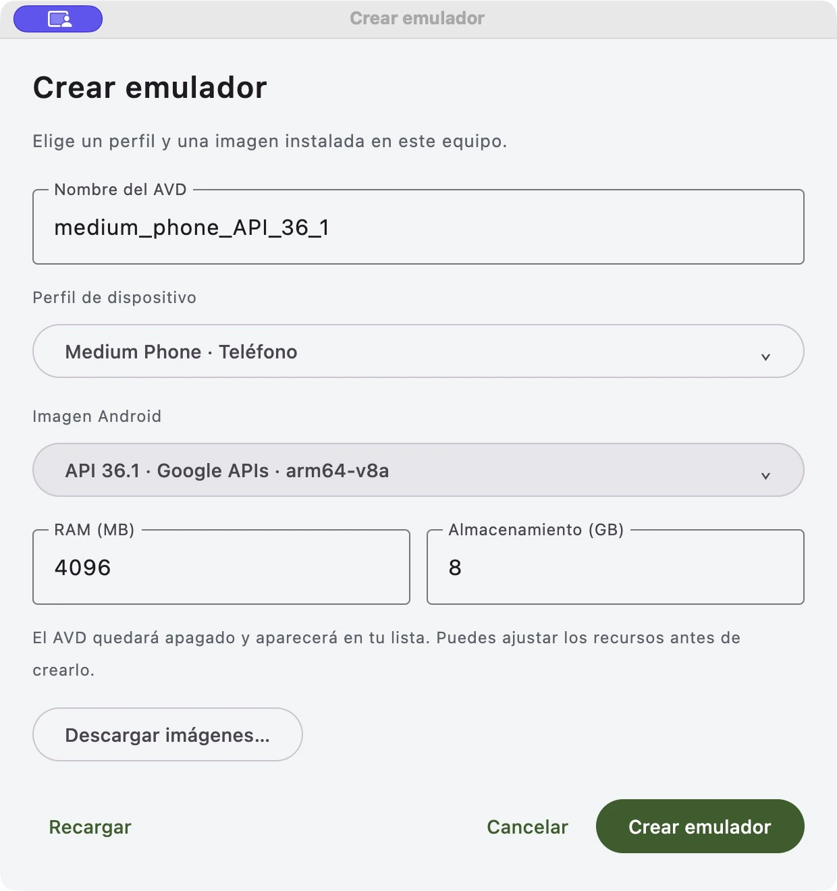

Versão em desenvolvimento / macOS
Seus emuladores Android,
em uma só janela.
Do celular ao dobrável. Alterne entre dispositivos, teste seu app e grave o que acontece na mesma janela do Mac.
Conheça a interface
A interface
Do perfil de hardware
ao primeiro gesto.
Mantenha vários emuladores em execução e escolha qual controlar. Em um dobrável, mude a posição da dobra para ver como o layout se adapta.


Crie o dispositivo de que você precisa.
Escolha um perfil de hardware e uma imagem do Android. Ajuste a RAM e o armazenamento antes de iniciar.

Descubra onde a conexão falhou.
Verifique o ADB, o gRPC e a chegada do primeiro quadro. Reconecte o dispositivo pelo próprio hub.
Capturas da versão 0.1.0-alpha.1. Selecione uma imagem para ampliá-la.
Compartilhe o que você viu.
Salve uma captura de tela ou grave suas interações em MP4. A gravação continua no emulador escolhido mesmo se você mudar para outro.
Disponível para macOS
Experimente nossa versão em desenvolvimento.
Antes de instalar
- Mac com Apple Silicon. O DMG da versão 0.1.0-alpha.5 foi compilado para ARM64.
- SDK do Android instalado localmente. Instale o Android Emulator, o Android SDK Platform-Tools e o Android SDK Command-line Tools (latest).
- JDK 17 ou posterior. As ferramentas de linha de comando do SDK precisam do Java.
Instale com o Homebrew
brew install --cask devpicon/tools/android-emulator-hubEsta versão aparece no Mac como Android Emulator Hub.
Para iniciar seu primeiro emulador, escolha um dispositivo virtual existente ou crie um no hub. Se precisar de uma imagem do Android, você pode baixá-la pelo app.
Ver versões no GitHub